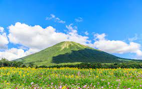

Top destinations in Chugoku
Okayama Prefecture
Okayama
Famous for one of Japan's three best gardens.
Kurashiki
City with a picturesque, historic canal area.
Bitchu-Takahashi
Pretty town with original mountaintop castle.
Inujima Island
Small island turned into a modern art site.
Hiroshima Prefecture
Yamaguchi Prefecture
Yamaguchi
Pleasant city at the western end of Honshu.
Iwakuni
Site of the picturesque Kintai-kyo Bridge.
Hagi
Castle town with preserved samurai district.
Akiyoshidai
Karst plateau with large limestone cave.
Shimonoseki
City at the westernmost tip of Honshu.
Motonosumi Shrine
Remote shrine along the coast with tunnel of torii gates
Tottori Prefecture
Tottori
Prefectural capital known for its sand dunes.

Mount Daisen
Tallest mountain in the Chugoku Region.